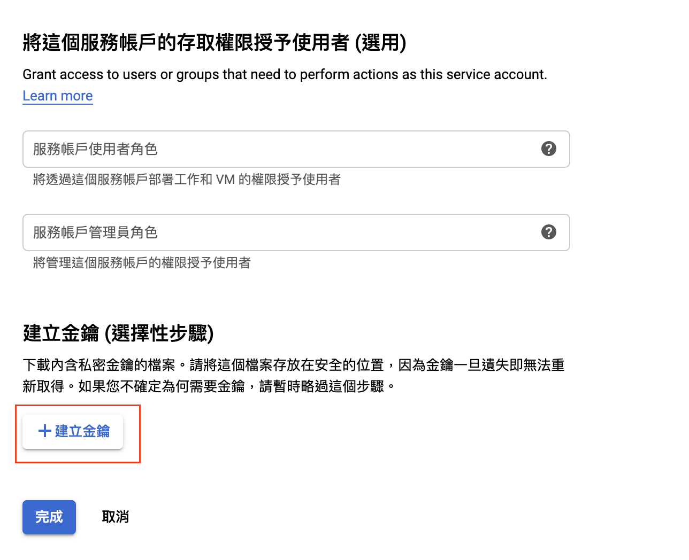

<!DOCTYPE html>
<html lang="zh-tw">
    
<head>
    <meta charset="UTF-8">
    <meta name="viewport" content="width=device-width, initial-scale=1">
    <meta name="generator" content="Yee的補坑筆記">
    <title>Laravel - 讀寫 google sheet - Yee的補坑筆記</title>
    <meta name="author" content="Yee">
    
        <meta name="keywords" content="laravel,docker,">
    
    
    
    <script type="application/ld+json">{"@context":"http://schema.org","@type":"BlogPosting","author":{"@type":"Person","name":"Yee","sameAs":["mailto:amung966w@gmail.com"],"image":"yee.jpeg"},"articleBody":"某天，有個需求，能否自動匯出資料到google sheet，\n當然是沒問題～ \n先看看google官方的文件… 似乎有點麻煩呀，\n那就看看laravel有沒有package了…\n\n當然是有的，而且省去了官方文件上一連串登入的動作，\n\n本文所採用的環境\b\n\nMax OSX 10.15\nDocker version 19.03.5\n\nGoogle Sheets API v4 for Laravel\n\n這package的存去方式是透過在google apis中，\n開啟 google sheet 和 雲端硬碟 的api使用權限，\n並建立一個虛擬帳戶，供程式使用該帳戶登入並存取api，\n所以我們先到google apis中建立專案，建立完專案後，啟動api服務，本次要起動 sheet 和 drive 這兩項服務，點下啟用後就完成了！((drive也是如此方式啟動\n接著就是建立一個虛擬帳戶，來供程式存取，\n依稀還記得以前都是直接開一個google帳號用來登入，\n現在可以透過虛擬帳戶，真的是比較方便，又不用怕密碼放到程式中…\n左側選單中找到api與服務，再選憑證進入憑證的頁面後，選擇建立憑證，輸入該虛擬帳戶的名稱，幫該帳戶設定權限幫憑證弄一組金鑰右側會跳出選項，這裡我們選擇json之後就會自動下載一個json檔，該檔案會有這個虛擬帳戶的登入資訊，請妥善保管喔！開一個google sheet，並分享這個檔案給虛擬帳戶\n\u001f***接下來回到Laravel，\n先安裝這個package，並建立組態檔\n1234# 安裝packagecomposer require revolution&#x2F;laravel-google-sheets# 設定組態檔php artisan vendor:publish --provider&#x3D;&quot;PulkitJalan\\Google\\GoogleServiceProvider&quot; --tag&#x3D;&quot;config&quot;\n\n\n小貼士\npackage預設是給laravel &gt;= 5.8的專案使用，若現在低於這個版本的話…\n別擔心這邊有更新紀錄\n該package還有支援到 php7 + laravel 5.5 的呦～～ \n當時找到這package時也忘了版本，研究好也寫個service要交給同事時，才想到自家專案是5.5阿… \n差點以為要熬夜從來了，還好有來看一下，還好有支援5.5呀～～～\n\n裝好將我們剛剛取得的json檔放到public底下，\n然後到.env底下，將以下貼入\n123456789GOOGLE_APPLICATION_NAME&#x3D;GOOGLE_CLIENT_ID&#x3D;GOOGLE_CLIENT_SECRET&#x3D;GOOGLE_REDIRECT&#x3D;GOOGLE_DEVELOPER_KEY&#x3D;GOOGLE_SERVICE_ENABLED&#x3D;trueGOOGLE_SERVICE_ACCOUNT_JSON_LOCATION&#x3D;剛剛取得的那個json檔POST_SPREADSHEET_ID&#x3D;google sheet的 idPOST_SHEET_ID&#x3D;google sheet作業簿的名字\nPOST_SPREADSHEET_ID 跟 POST_SHEET_ID 在這裡之後到congfig/google.php中貼上\n12345# scopes 表示該token可以使用哪些權限'scopes' =&gt; [\\Google_Service_Sheets::DRIVE, \\Google_Service_Sheets::SPREADSHEETS],---'post_spreadsheet_id' =&gt; env('POST_SPREADSHEET_ID', ''),'post_sheet_id'       =&gt; env('POST_SHEET_ID', ''),\n這樣就完成我們的基本設定拉～ 開始寫code摟\n我們開一個叫GSheetService的檔案，\n如果有在laravel做分層架構的話，就把這檔案放到你的service層 (( 商業邏輯層、共用類別… 巴拉巴拉的地方\n12345678910111213141516171819202122232425262728293031323334353637383940&lt;?phpnamespace App\\Services;use Sheets;class GSheetService&#123;    /**     * Sheet     */    public function Sheet($sheet_id, $sheet_name)    &#123;        return Sheets::spreadsheet($sheet_id)-&gt;sheet($sheet_name);     &#125;    /**     * Get sheet's data     */    public function Get($sheet_id, $sheet_name)    &#123;        return $this-&gt;Sheet($sheet_id, $sheet_name)-&gt;get();    &#125;    /**     * Append data to sheet     */    public function Append($sheet_id, $sheet_name, $data = [])    &#123;        return $this-&gt;Sheet($sheet_id, $sheet_name)-&gt;append([$data]);    &#125;    /**     * Update sheet's all data     */    public function Update($sheet_id, $sheet_name, $data = [])    &#123;        return $this-&gt;Sheet($sheet_id, $sheet_name)-&gt;update([$data]);    &#125;&#125;\n在這個service中，我們將作者提供的功能稍微包裝成幾個package供我們的程式使用，\n然後我們回到Controller中，將剛才的Service引用進去，\n123456789101112131415161718192021222324252627282930313233&lt;?phpnamespace App\\Http\\Controllers;use Illuminate\\Http\\Request;use App\\Services\\GSheetService;class SheetController extends Controller&#123;    protected $gsheetservice;    /**     * 建構子     */    public function __construct(GSheetService $gsheetservice)    &#123;        $this-&gt;gsheetservice = $gsheetservice;    &#125;    public function Sheet()    &#123;        $sheets = $this-&gt;gsheetservice-&gt;Get(config('google.post_spreadsheet_id'), config('google.post_sheet_id'));        dd($sheets);    &#125;    public function AddSheet()    &#123;        $data = ['2020-4-19', '3000', '2000', '', 'test'];        $sheets = $this-&gt;gsheetservice-&gt;Append(config('google.post_spreadsheet_id'), config('google.post_sheet_id'), $data);        $sheets = $this-&gt;gsheetservice-&gt;Get(config('google.post_spreadsheet_id'), config('google.post_sheet_id'));        dd($sheets);    &#125;&#125;\n\n之後就是到 web/router.php 設定一下簡單的路由\n12Route::get('/sheet', 'SheetController@Sheet');Route::get('/sheetadd', 'SheetController@AddSheet');\n\n我們先測試get吧，看到這個畫面就表示成功取得google sheet的資料拉～\n那換測試新增看看，陣列長度變3，也可以看到剛剛新增的資料～～\n完成拉\n\n後記\n其實google近幾年把api文件整理的比較清楚了，\n但教學還是優先在oauth2登入的部分，\n但我們不需要一個登入畫面給使用者登入，我們只需要一個權限去讀取檔案而已。\n至於刪除～～ package似乎沒有這function，\n粗步推估要\bget，刪除某一筆後，在update回sheet中～～\n下次再做個py版的，也是有套件輔助，方便許多\n\nRefGoogle Sheets API v4 for LaravelCONNECTING LARAVEL TO A GOOGLE SHEET\n","dateCreated":"2020-04-19T18:37:52+08:00","dateModified":"2020-04-19T23:27:58+08:00","datePublished":"2020-04-19T18:37:52+08:00","description":"某天，有個需求，能否自動匯出資料到google sheet，\n當然是沒問題～ \n先看看google官方的文件… 似乎有點麻煩呀，\n那就看看laravel有沒有package了…","headline":"Laravel - 讀寫 google sheet","image":[],"mainEntityOfPage":{"@type":"WebPage","@id":"https://yeeinhole.github.io/2020/04/19/gsheet/"},"publisher":{"@type":"Organization","name":"Yee","sameAs":["mailto:amung966w@gmail.com"],"image":"yee.jpeg","logo":{"@type":"ImageObject","url":"yee.jpeg"}},"url":"https://yeeinhole.github.io/2020/04/19/gsheet/","keywords":"w3HexSchool, laravel, google sheet"}</script>
    <meta name="description" content="某天，有個需求，能否自動匯出資料到google sheet， 當然是沒問題～  先看看google官方的文件… 似乎有點麻煩呀， 那就看看laravel有沒有package了…">
<meta property="og:type" content="blog">
<meta property="og:title" content="Laravel - 讀寫 google sheet">
<meta property="og:url" content="https://yeeinhole.github.io/2020/04/19/gsheet/index.html">
<meta property="og:site_name" content="Yee的補坑筆記">
<meta property="og:description" content="某天，有個需求，能否自動匯出資料到google sheet， 當然是沒問題～  先看看google官方的文件… 似乎有點麻煩呀， 那就看看laravel有沒有package了…">
<meta property="og:locale" content="zh_TW">
<meta property="og:image" content="https://yeeinhole.github.io/image/gsheet/api1.png">
<meta property="og:image" content="https://yeeinhole.github.io/image/gsheet/api2.png">
<meta property="og:image" content="https://yeeinhole.github.io/image/gsheet/api3.png">
<meta property="og:image" content="https://yeeinhole.github.io/image/gsheet/api4.png">
<meta property="og:image" content="https://yeeinhole.github.io/image/gsheet/api5.png">
<meta property="og:image" content="https://yeeinhole.github.io/image/gsheet/api6.png">
<meta property="og:image" content="https://yeeinhole.github.io/image/gsheet/api7.png">
<meta property="og:image" content="https://yeeinhole.github.io/image/gsheet/api8.png">
<meta property="og:image" content="https://yeeinhole.github.io/image/gsheet/api9.png">
<meta property="og:image" content="https://yeeinhole.github.io/image/gsheet/api10.png">
<meta property="og:image" content="https://yeeinhole.github.io/image/gsheet/api11.png">
<meta property="og:image" content="https://yeeinhole.github.io/image/gsheet/api12.png">
<meta property="og:image" content="https://yeeinhole.github.io/image/gsheet/laravel1.png">
<meta property="og:image" content="https://yeeinhole.github.io/image/gsheet/laravel2.png">
<meta property="og:image" content="https://yeeinhole.github.io/image/gsheet/laravel3.png">
<meta property="article:published_time" content="2020-04-19T10:37:52.000Z">
<meta property="article:modified_time" content="2020-04-19T15:27:58.535Z">
<meta property="article:author" content="Yee">
<meta property="article:tag" content="w3HexSchool">
<meta property="article:tag" content="laravel">
<meta property="article:tag" content="google sheet">
<meta name="twitter:card" content="summary">
<meta name="twitter:image" content="https://yeeinhole.github.io/image/gsheet/api1.png">
    
    
        
    
    
        <meta property="og:image" content="https://yeeinhole.github.io/assets/images/yee.jpeg"/>
    
    
    
    
    <!--STYLES-->
    
<link rel="stylesheet" href="/assets/css/style-2lqfypdcngq7rgk11flmhgs30biseha2s4rv2frat5edalqervoqqqtncnuh.min.css">

    <!--STYLES END-->
    

    

    
        
    
</head>

    <body>
        <div id="blog">
            <!-- Define author's picture -->


    
        
            
        
    

<header id="header" data-behavior="4">
    <i id="btn-open-sidebar" class="fa fa-lg fa-bars"></i>
    <div class="header-title">
        <a
            class="header-title-link"
            href="/"
            aria-label=""
        >
            Yee的補坑筆記
        </a>
    </div>
    
        
            <a
                class="header-right-picture "
                href="#about"
                aria-label="打開鏈接: /#about"
            >
        
        
            
        
        </a>
    
</header>

            <!-- Define author's picture -->


        
    

<nav id="sidebar" data-behavior="4">
    <div class="sidebar-container">
        
            <div class="sidebar-profile">
                <a
                    href="/#about"
                    aria-label="閱讀有關作者的更多信息"
                >
                    
                </a>
                <h4 class="sidebar-profile-name">Yee</h4>
                
                    <h5 class="sidebar-profile-bio"><p>Hi 我是 Yee，常常不小心就掉進坑中…</p>
</h5>
                
            </div>
        
        
            <ul class="sidebar-buttons">
            
                <li class="sidebar-button">
                    
                        <a  class="sidebar-button-link "
                             href="https://yeeinhole.github.io/"
                            title="首頁"
                        >
                    
                        <i class="sidebar-button-icon fa fa-home" aria-hidden="true"></i>
                        <span class="sidebar-button-desc">首頁</span>
                    </a>
            </li>
            
                <li class="sidebar-button">
                    
                        <a  class="sidebar-button-link "
                             href="/all-categories"
                            
                            title="分類"
                        >
                    
                        <i class="sidebar-button-icon fa fa-bookmark" aria-hidden="true"></i>
                        <span class="sidebar-button-desc">分類</span>
                    </a>
            </li>
            
                <li class="sidebar-button">
                    
                        <a  class="sidebar-button-link "
                             href="/all-tags"
                            
                            title="標籤"
                        >
                    
                        <i class="sidebar-button-icon fa fa-tags" aria-hidden="true"></i>
                        <span class="sidebar-button-desc">標籤</span>
                    </a>
            </li>
            
                <li class="sidebar-button">
                    
                        <a  class="sidebar-button-link "
                             href="/all-archives"
                            
                            title="所有文章"
                        >
                    
                        <i class="sidebar-button-icon fa fa-archive" aria-hidden="true"></i>
                        <span class="sidebar-button-desc">所有文章</span>
                    </a>
            </li>
            
                <li class="sidebar-button">
                    
                        <a  class="sidebar-button-link "
                             href="/friend"
                            
                            title="友情連結"
                        >
                    
                        <i class="sidebar-button-icon fas fa-link" aria-hidden="true"></i>
                        <span class="sidebar-button-desc">友情連結</span>
                    </a>
            </li>
            
                <li class="sidebar-button">
                    
                        <a  class="sidebar-button-link "
                             href="#about"
                            
                            title="關於"
                        >
                    
                        <i class="sidebar-button-icon fa fa-question" aria-hidden="true"></i>
                        <span class="sidebar-button-desc">關於</span>
                    </a>
            </li>
            
        </ul>
        
            <ul class="sidebar-buttons">
            
                <li class="sidebar-button">
                    
                        <a  class="sidebar-button-link " href="mailto:amung966w@gmail.com" target="_blank" rel="noopener" title="Email">
                    
                        <i class="sidebar-button-icon fa fa-envelope" aria-hidden="true"></i>
                        <span class="sidebar-button-desc">Email</span>
                    </a>
            </li>
            
        </ul>
        
    </div>
</nav>

            
            <div id="main" data-behavior="4"
                 class="
                        hasCoverMetaIn
                        ">
                
<article class="post">
    
    
        <div class="post-header main-content-wrap text-left">
    
        <h1 class="post-title">
            Laravel - 讀寫 google sheet
        </h1>
    
    
        <div class="post-meta">
    <time datetime="2020-04-19T18:37:52+08:00">
	
		    4月 19, 2020
    	
    </time>
    
        <span>分類 </span>
        
    <a class="category-link" href="/categories/Laravel/">Laravel</a>


    
</div>

    
</div>

    
    <div class="post-content markdown">
        <div class="main-content-wrap">
            <p>某天，有個需求，能否自動匯出資料到google sheet，</p>
<p>當然是沒問題～ </p>
<p>先看看google官方的文件… 似乎有點麻煩呀，</p>
<p>那就看看laravel有沒有package了…</p>
<a id="more"></a>
<p>當然是有的，而且省去了官方文件上一連串登入的動作，</p>
<hr>
<p>本文所採用的環境<br></p>
<ol>
<li>Max OSX 10.15</li>
<li>Docker version 19.03.5</li>
</ol>
<p><a href="https://github.com/kawax/laravel-google-sheets" target="_blank" rel="noopener">Google Sheets API v4 for Laravel</a></p>
<hr>
<p>這package的存去方式是透過在google apis中，</p>
<p>開啟 google sheet 和 雲端硬碟 的api使用權限，</p>
<p>並建立一個虛擬帳戶，供程式使用該帳戶登入並存取api，</p>
<p>所以我們先到google apis中建立專案，<br><br>建立完專案後，啟動api服務，<br><br>本次要起動 sheet 和 drive 這兩項服務，<br><br><br>點下啟用後就完成了！((drive也是如此方式啟動</p>
<p>接著就是建立一個虛擬帳戶，來供程式存取，</p>
<p>依稀還記得以前都是直接開一個google帳號用來登入，</p>
<p>現在可以透過虛擬帳戶，真的是比較方便，又不用怕密碼放到程式中…</p>
<p>左側選單中找到api與服務，再選憑證<br><br>進入憑證的頁面後，選擇建立憑證，<br><br>輸入該虛擬帳戶的名稱，<br><br>幫該帳戶設定權限<br><br>幫憑證弄一組金鑰<br><br>右側會跳出選項，這裡我們選擇json<br><br>之後就會自動下載一個json檔，該檔案會有這個虛擬帳戶的登入資訊，請妥善保管喔！<br><br>開一個google sheet，並分享這個檔案給虛擬帳戶<br></p>
<p>***<br>接下來回到Laravel，</p>
<p>先安裝這個package，並建立組態檔</p>
<figure class="highlight plain"><table><tr><td class="gutter"><pre><span class="line">1</span><br><span class="line">2</span><br><span class="line">3</span><br><span class="line">4</span><br></pre></td><td class="code"><pre><span class="line"># 安裝package</span><br><span class="line">composer require revolution&#x2F;laravel-google-sheets</span><br><span class="line"># 設定組態檔</span><br><span class="line">php artisan vendor:publish --provider&#x3D;&quot;PulkitJalan\Google\GoogleServiceProvider&quot; --tag&#x3D;&quot;config&quot;</span><br></pre></td></tr></table></figure>

<hr>
<p>小貼士</p>
<p>package預設是給laravel &gt;= 5.8的專案使用，若現在低於這個版本的話…</p>
<p>別擔心這邊有<a href="https://github.com/kawax/laravel-google-sheets/blob/master/UPGRADING.md" target="_blank" rel="noopener">更新紀錄</a></p>
<p>該package還有支援到 php7 + laravel 5.5 的呦～～ </p>
<p>當時找到這package時也忘了版本，研究好也寫個service要交給同事時，才想到自家專案是5.5阿… </p>
<p>差點以為要熬夜從來了，還好有來看一下，還好有支援5.5呀～～～</p>
<hr>
<p>裝好將我們剛剛取得的json檔放到public底下，</p>
<p>然後到.env底下，將以下貼入</p>
<figure class="highlight plain"><table><tr><td class="gutter"><pre><span class="line">1</span><br><span class="line">2</span><br><span class="line">3</span><br><span class="line">4</span><br><span class="line">5</span><br><span class="line">6</span><br><span class="line">7</span><br><span class="line">8</span><br><span class="line">9</span><br></pre></td><td class="code"><pre><span class="line">GOOGLE_APPLICATION_NAME&#x3D;</span><br><span class="line">GOOGLE_CLIENT_ID&#x3D;</span><br><span class="line">GOOGLE_CLIENT_SECRET&#x3D;</span><br><span class="line">GOOGLE_REDIRECT&#x3D;</span><br><span class="line">GOOGLE_DEVELOPER_KEY&#x3D;</span><br><span class="line">GOOGLE_SERVICE_ENABLED&#x3D;true</span><br><span class="line">GOOGLE_SERVICE_ACCOUNT_JSON_LOCATION&#x3D;剛剛取得的那個json檔</span><br><span class="line">POST_SPREADSHEET_ID&#x3D;google sheet的 id</span><br><span class="line">POST_SHEET_ID&#x3D;google sheet作業簿的名字</span><br></pre></td></tr></table></figure>
<p>POST_SPREADSHEET_ID 跟 POST_SHEET_ID 在這裡<br><br>之後到congfig/google.php中貼上</p>
<figure class="highlight php"><table><tr><td class="gutter"><pre><span class="line">1</span><br><span class="line">2</span><br><span class="line">3</span><br><span class="line">4</span><br><span class="line">5</span><br></pre></td><td class="code"><pre><span class="line"><span class="comment"># scopes 表示該token可以使用哪些權限</span></span><br><span class="line"><span class="string">'scopes'</span> =&gt; [\Google_Service_Sheets::DRIVE, \Google_Service_Sheets::SPREADSHEETS],</span><br><span class="line">---</span><br><span class="line"><span class="string">'post_spreadsheet_id'</span> =&gt; env(<span class="string">'POST_SPREADSHEET_ID'</span>, <span class="string">''</span>),</span><br><span class="line"><span class="string">'post_sheet_id'</span>       =&gt; env(<span class="string">'POST_SHEET_ID'</span>, <span class="string">''</span>),</span><br></pre></td></tr></table></figure>
<p>這樣就完成我們的基本設定拉～ 開始寫code摟</p>
<p>我們開一個叫GSheetService的檔案，</p>
<p>如果有在laravel做分層架構的話，就把這檔案放到你的service層 (( 商業邏輯層、共用類別… 巴拉巴拉的地方</p>
<figure class="highlight php"><table><tr><td class="gutter"><pre><span class="line">1</span><br><span class="line">2</span><br><span class="line">3</span><br><span class="line">4</span><br><span class="line">5</span><br><span class="line">6</span><br><span class="line">7</span><br><span class="line">8</span><br><span class="line">9</span><br><span class="line">10</span><br><span class="line">11</span><br><span class="line">12</span><br><span class="line">13</span><br><span class="line">14</span><br><span class="line">15</span><br><span class="line">16</span><br><span class="line">17</span><br><span class="line">18</span><br><span class="line">19</span><br><span class="line">20</span><br><span class="line">21</span><br><span class="line">22</span><br><span class="line">23</span><br><span class="line">24</span><br><span class="line">25</span><br><span class="line">26</span><br><span class="line">27</span><br><span class="line">28</span><br><span class="line">29</span><br><span class="line">30</span><br><span class="line">31</span><br><span class="line">32</span><br><span class="line">33</span><br><span class="line">34</span><br><span class="line">35</span><br><span class="line">36</span><br><span class="line">37</span><br><span class="line">38</span><br><span class="line">39</span><br><span class="line">40</span><br></pre></td><td class="code"><pre><span class="line"><span class="meta">&lt;?php</span></span><br><span class="line"></span><br><span class="line"><span class="keyword">namespace</span> <span class="title">App</span>\<span class="title">Services</span>;</span><br><span class="line"></span><br><span class="line"><span class="keyword">use</span> <span class="title">Sheets</span>;</span><br><span class="line"></span><br><span class="line"><span class="class"><span class="keyword">class</span> <span class="title">GSheetService</span></span></span><br><span class="line"><span class="class"></span>&#123;</span><br><span class="line">    <span class="comment">/**</span></span><br><span class="line"><span class="comment">     * Sheet</span></span><br><span class="line"><span class="comment">     */</span></span><br><span class="line">    <span class="keyword">public</span> <span class="function"><span class="keyword">function</span> <span class="title">Sheet</span><span class="params">($sheet_id, $sheet_name)</span></span></span><br><span class="line"><span class="function">    </span>&#123;</span><br><span class="line">        <span class="keyword">return</span> Sheets::spreadsheet($sheet_id)-&gt;sheet($sheet_name); </span><br><span class="line">    &#125;</span><br><span class="line"></span><br><span class="line">    <span class="comment">/**</span></span><br><span class="line"><span class="comment">     * Get sheet's data</span></span><br><span class="line"><span class="comment">     */</span></span><br><span class="line">    <span class="keyword">public</span> <span class="function"><span class="keyword">function</span> <span class="title">Get</span><span class="params">($sheet_id, $sheet_name)</span></span></span><br><span class="line"><span class="function">    </span>&#123;</span><br><span class="line">        <span class="keyword">return</span> <span class="keyword">$this</span>-&gt;Sheet($sheet_id, $sheet_name)-&gt;get();</span><br><span class="line">    &#125;</span><br><span class="line"></span><br><span class="line">    <span class="comment">/**</span></span><br><span class="line"><span class="comment">     * Append data to sheet</span></span><br><span class="line"><span class="comment">     */</span></span><br><span class="line">    <span class="keyword">public</span> <span class="function"><span class="keyword">function</span> <span class="title">Append</span><span class="params">($sheet_id, $sheet_name, $data = [])</span></span></span><br><span class="line"><span class="function">    </span>&#123;</span><br><span class="line">        <span class="keyword">return</span> <span class="keyword">$this</span>-&gt;Sheet($sheet_id, $sheet_name)-&gt;append([$data]);</span><br><span class="line">    &#125;</span><br><span class="line"></span><br><span class="line">    <span class="comment">/**</span></span><br><span class="line"><span class="comment">     * Update sheet's all data</span></span><br><span class="line"><span class="comment">     */</span></span><br><span class="line">    <span class="keyword">public</span> <span class="function"><span class="keyword">function</span> <span class="title">Update</span><span class="params">($sheet_id, $sheet_name, $data = [])</span></span></span><br><span class="line"><span class="function">    </span>&#123;</span><br><span class="line">        <span class="keyword">return</span> <span class="keyword">$this</span>-&gt;Sheet($sheet_id, $sheet_name)-&gt;update([$data]);</span><br><span class="line">    &#125;</span><br><span class="line">&#125;</span><br></pre></td></tr></table></figure>
<p>在這個service中，我們將作者提供的功能稍微包裝成幾個package供我們的程式使用，</p>
<p>然後我們回到Controller中，將剛才的Service引用進去，</p>
<figure class="highlight php"><table><tr><td class="gutter"><pre><span class="line">1</span><br><span class="line">2</span><br><span class="line">3</span><br><span class="line">4</span><br><span class="line">5</span><br><span class="line">6</span><br><span class="line">7</span><br><span class="line">8</span><br><span class="line">9</span><br><span class="line">10</span><br><span class="line">11</span><br><span class="line">12</span><br><span class="line">13</span><br><span class="line">14</span><br><span class="line">15</span><br><span class="line">16</span><br><span class="line">17</span><br><span class="line">18</span><br><span class="line">19</span><br><span class="line">20</span><br><span class="line">21</span><br><span class="line">22</span><br><span class="line">23</span><br><span class="line">24</span><br><span class="line">25</span><br><span class="line">26</span><br><span class="line">27</span><br><span class="line">28</span><br><span class="line">29</span><br><span class="line">30</span><br><span class="line">31</span><br><span class="line">32</span><br><span class="line">33</span><br></pre></td><td class="code"><pre><span class="line"><span class="meta">&lt;?php</span></span><br><span class="line"></span><br><span class="line"><span class="keyword">namespace</span> <span class="title">App</span>\<span class="title">Http</span>\<span class="title">Controllers</span>;</span><br><span class="line"></span><br><span class="line"><span class="keyword">use</span> <span class="title">Illuminate</span>\<span class="title">Http</span>\<span class="title">Request</span>;</span><br><span class="line"><span class="keyword">use</span> <span class="title">App</span>\<span class="title">Services</span>\<span class="title">GSheetService</span>;</span><br><span class="line"></span><br><span class="line"><span class="class"><span class="keyword">class</span> <span class="title">SheetController</span> <span class="keyword">extends</span> <span class="title">Controller</span></span></span><br><span class="line"><span class="class"></span>&#123;</span><br><span class="line">    <span class="keyword">protected</span> $gsheetservice;</span><br><span class="line">    <span class="comment">/**</span></span><br><span class="line"><span class="comment">     * 建構子</span></span><br><span class="line"><span class="comment">     */</span></span><br><span class="line">    <span class="keyword">public</span> <span class="function"><span class="keyword">function</span> <span class="title">__construct</span><span class="params">(GSheetService $gsheetservice)</span></span></span><br><span class="line"><span class="function">    </span>&#123;</span><br><span class="line">        <span class="keyword">$this</span>-&gt;gsheetservice = $gsheetservice;</span><br><span class="line">    &#125;</span><br><span class="line"></span><br><span class="line">    <span class="keyword">public</span> <span class="function"><span class="keyword">function</span> <span class="title">Sheet</span><span class="params">()</span></span></span><br><span class="line"><span class="function">    </span>&#123;</span><br><span class="line">        $sheets = <span class="keyword">$this</span>-&gt;gsheetservice-&gt;Get(config(<span class="string">'google.post_spreadsheet_id'</span>), config(<span class="string">'google.post_sheet_id'</span>));</span><br><span class="line"></span><br><span class="line">        dd($sheets);</span><br><span class="line">    &#125;</span><br><span class="line"></span><br><span class="line">    <span class="keyword">public</span> <span class="function"><span class="keyword">function</span> <span class="title">AddSheet</span><span class="params">()</span></span></span><br><span class="line"><span class="function">    </span>&#123;</span><br><span class="line">        $data = [<span class="string">'2020-4-19'</span>, <span class="string">'3000'</span>, <span class="string">'2000'</span>, <span class="string">''</span>, <span class="string">'test'</span>];</span><br><span class="line">        $sheets = <span class="keyword">$this</span>-&gt;gsheetservice-&gt;Append(config(<span class="string">'google.post_spreadsheet_id'</span>), config(<span class="string">'google.post_sheet_id'</span>), $data);</span><br><span class="line">        $sheets = <span class="keyword">$this</span>-&gt;gsheetservice-&gt;Get(config(<span class="string">'google.post_spreadsheet_id'</span>), config(<span class="string">'google.post_sheet_id'</span>));</span><br><span class="line">        dd($sheets);</span><br><span class="line">    &#125;</span><br><span class="line">&#125;</span><br></pre></td></tr></table></figure>

<p>之後就是到 web/router.php 設定一下簡單的路由</p>
<figure class="highlight php"><table><tr><td class="gutter"><pre><span class="line">1</span><br><span class="line">2</span><br></pre></td><td class="code"><pre><span class="line">Route::get(<span class="string">'/sheet'</span>, <span class="string">'SheetController@Sheet'</span>);</span><br><span class="line">Route::get(<span class="string">'/sheetadd'</span>, <span class="string">'SheetController@AddSheet'</span>);</span><br></pre></td></tr></table></figure>

<p>我們先測試get吧，<br><br>看到這個畫面就表示成功取得google sheet的資料拉～</p>
<p>那換測試新增看看，<br><br>陣列長度變3，也可以看到剛剛新增的資料～～</p>
<p>完成拉</p>
<hr>
<p>後記</p>
<p>其實google近幾年把api文件整理的比較清楚了，</p>
<p>但教學還是優先在oauth2登入的部分，</p>
<p>但我們不需要一個登入畫面給使用者登入，我們只需要一個權限去讀取檔案而已。</p>
<p>至於刪除～～ package似乎沒有這function，</p>
<p>粗步推估要get，刪除某一筆後，在update回sheet中～～</p>
<p>下次再做個py版的，也是有套件輔助，方便許多</p>
<hr>
<p>Ref<br><a href="https://github.com/kawax/laravel-google-sheets" target="_blank" rel="noopener">Google Sheets API v4 for Laravel</a><br><a href="https://drivemarketing.ca/en/blog/connecting-laravel-to-a-google-sheet/" target="_blank" rel="noopener">CONNECTING LARAVEL TO A GOOGLE SHEET</a></p>

            


        </div>
    </div>
    <div id="post-footer" class="post-footer main-content-wrap">
        
            <div class="post-footer-tags">
                <span class="text-color-light text-small">標籤</span><br/>
                
    <a class="tag tag--primary tag--small t-link" href="/tags/google-sheet/" rel="tag">google sheet</a> <a class="tag tag--primary tag--small t-link" href="/tags/laravel/" rel="tag">laravel</a> <a class="tag tag--primary tag--small t-link" href="/tags/w3HexSchool/" rel="tag">w3HexSchool</a>

            </div>
        
        
            <div class="post-actions-wrap">
    <nav>
        <ul class="post-actions post-action-nav">
            <li class="post-action">
                
                    
                <a
                    class="post-action-btn btn btn--default tooltip--top"
                    href="/2020/04/25/laravel-2/"
                    data-tooltip="Laravel之旅 - 善用Migration管理資料表"
                    aria-label="上一篇: Laravel之旅 - 善用Migration管理資料表"
                >
                    
                        <i class="fa fa-angle-left" aria-hidden="true"></i>
                        <span class="hide-xs hide-sm text-small icon-ml">上一篇</span>
                    </a>
            </li>
            <li class="post-action">
                
                    
                <a
                    class="post-action-btn btn btn--default tooltip--top"
                    href="/2020/04/03/mac-zsh/"
                    data-tooltip="Mac - 用zsh就是要自訂自己喜歡的樣式"
                    aria-label="下一篇: Mac - 用zsh就是要自訂自己喜歡的樣式"
                >
                    
                        <span class="hide-xs hide-sm text-small icon-mr">下一篇</span>
                        <i class="fa fa-angle-right" aria-hidden="true"></i>
                    </a>
            </li>
        </ul>
    </nav>
    <ul class="post-actions post-action-share">
        <li class="post-action hide-lg hide-md hide-sm">
            <a
                class="post-action-btn btn btn--default btn-open-shareoptions"
                href="#btn-open-shareoptions"
                aria-label="Diesen Beitrag teilen"
            >
                <i class="fa fa-share-alt" aria-hidden="true"></i>
            </a>
        </li>
        
            
            
            <li class="post-action hide-xs">
                <a
                    class="post-action-btn btn btn--default"
                    target="new" href="https://www.facebook.com/sharer/sharer.php?u=https://yeeinhole.github.io/2020/04/19/gsheet/"
                    title="分享到 Facebook"
                    aria-label="分享到 Facebook"
                >
                    <i class="fab fa-facebook" aria-hidden="true"></i>
                </a>
            </li>
        
            
            
            <li class="post-action hide-xs">
                <a
                    class="post-action-btn btn btn--default"
                    target="new" href="https://twitter.com/intent/tweet?text=https://yeeinhole.github.io/2020/04/19/gsheet/"
                    title="分享到 Twitter"
                    aria-label="分享到 Twitter"
                >
                    <i class="fab fa-twitter" aria-hidden="true"></i>
                </a>
            </li>
        
            
            
            <li class="post-action hide-xs">
                <a
                    class="post-action-btn btn btn--default"
                    target="new" href="https://plus.google.com/share?url=https://yeeinhole.github.io/2020/04/19/gsheet/"
                    title="分享到 Google+"
                    aria-label="分享到 Google+"
                >
                    <i class="fab fa-google-plus" aria-hidden="true"></i>
                </a>
            </li>
        
        
            
        
        <li class="post-action">
            
                <a class="post-action-btn btn btn--default" href="#" aria-label="Nach oben">
            
                <i class="fa fa-list" aria-hidden="true"></i>
            </a>
        </li>
    </ul>
</div>


        
        
            
        
    </div>
</article>


                <footer id="footer" class="main-content-wrap">
    <span class="copyrights">
        Copyrights &copy; 2020 Yee. All Rights Reserved.
    </span>
</footer>

            </div>
            
                <div id="bottom-bar" class="post-bottom-bar" data-behavior="4">
                    <div class="post-actions-wrap">
    <nav>
        <ul class="post-actions post-action-nav">
            <li class="post-action">
                
                    
                <a
                    class="post-action-btn btn btn--default tooltip--top"
                    href="/2020/04/25/laravel-2/"
                    data-tooltip="Laravel之旅 - 善用Migration管理資料表"
                    aria-label="上一篇: Laravel之旅 - 善用Migration管理資料表"
                >
                    
                        <i class="fa fa-angle-left" aria-hidden="true"></i>
                        <span class="hide-xs hide-sm text-small icon-ml">上一篇</span>
                    </a>
            </li>
            <li class="post-action">
                
                    
                <a
                    class="post-action-btn btn btn--default tooltip--top"
                    href="/2020/04/03/mac-zsh/"
                    data-tooltip="Mac - 用zsh就是要自訂自己喜歡的樣式"
                    aria-label="下一篇: Mac - 用zsh就是要自訂自己喜歡的樣式"
                >
                    
                        <span class="hide-xs hide-sm text-small icon-mr">下一篇</span>
                        <i class="fa fa-angle-right" aria-hidden="true"></i>
                    </a>
            </li>
        </ul>
    </nav>
    <ul class="post-actions post-action-share">
        <li class="post-action hide-lg hide-md hide-sm">
            <a
                class="post-action-btn btn btn--default btn-open-shareoptions"
                href="#btn-open-shareoptions"
                aria-label="Diesen Beitrag teilen"
            >
                <i class="fa fa-share-alt" aria-hidden="true"></i>
            </a>
        </li>
        
            
            
            <li class="post-action hide-xs">
                <a
                    class="post-action-btn btn btn--default"
                    target="new" href="https://www.facebook.com/sharer/sharer.php?u=https://yeeinhole.github.io/2020/04/19/gsheet/"
                    title="分享到 Facebook"
                    aria-label="分享到 Facebook"
                >
                    <i class="fab fa-facebook" aria-hidden="true"></i>
                </a>
            </li>
        
            
            
            <li class="post-action hide-xs">
                <a
                    class="post-action-btn btn btn--default"
                    target="new" href="https://twitter.com/intent/tweet?text=https://yeeinhole.github.io/2020/04/19/gsheet/"
                    title="分享到 Twitter"
                    aria-label="分享到 Twitter"
                >
                    <i class="fab fa-twitter" aria-hidden="true"></i>
                </a>
            </li>
        
            
            
            <li class="post-action hide-xs">
                <a
                    class="post-action-btn btn btn--default"
                    target="new" href="https://plus.google.com/share?url=https://yeeinhole.github.io/2020/04/19/gsheet/"
                    title="分享到 Google+"
                    aria-label="分享到 Google+"
                >
                    <i class="fab fa-google-plus" aria-hidden="true"></i>
                </a>
            </li>
        
        
            
        
        <li class="post-action">
            
                <a class="post-action-btn btn btn--default" href="#" aria-label="Nach oben">
            
                <i class="fa fa-list" aria-hidden="true"></i>
            </a>
        </li>
    </ul>
</div>


                </div>
                
    <div id="share-options-bar" class="share-options-bar" data-behavior="4">
        <i id="btn-close-shareoptions" class="fa fa-times"></i>
        <ul class="share-options">
            
                
                
                <li class="share-option">
                    <a
                        class="share-option-btn"
                        target="new"
                        href="https://www.facebook.com/sharer/sharer.php?u=https://yeeinhole.github.io/2020/04/19/gsheet/"
                        aria-label="分享到 Facebook"
                    >
                        <i class="fab fa-facebook" aria-hidden="true"></i><span>分享到 Facebook</span>
                    </a>
                </li>
            
                
                
                <li class="share-option">
                    <a
                        class="share-option-btn"
                        target="new"
                        href="https://twitter.com/intent/tweet?text=https://yeeinhole.github.io/2020/04/19/gsheet/"
                        aria-label="分享到 Twitter"
                    >
                        <i class="fab fa-twitter" aria-hidden="true"></i><span>分享到 Twitter</span>
                    </a>
                </li>
            
                
                
                <li class="share-option">
                    <a
                        class="share-option-btn"
                        target="new"
                        href="https://plus.google.com/share?url=https://yeeinhole.github.io/2020/04/19/gsheet/"
                        aria-label="分享到 Google+"
                    >
                        <i class="fab fa-google-plus" aria-hidden="true"></i><span>分享到 Google+</span>
                    </a>
                </li>
            
        </ul>
    </div>


            
        </div>
        


    
        
    

<div id="about">
    <div id="about-card">
        <div id="about-btn-close">
            <i class="fa fa-times"></i>
        </div>
        
            
        
            <h4 id="about-card-name">Yee</h4>
        
            <div id="about-card-bio"><p>Hi 我是 Yee，常常不小心就掉進坑中…</p>
</div>
        
        
            <div id="about-card-job">
                <i class="fa fa-briefcase"></i>
                <br/>
                <p>後端工程師 X 數據分系</p>

            </div>
        
        
            <div id="about-card-location">
                <i class="fa fa-map-marker-alt"></i>
                <br/>
                Taiwan
            </div>
        
    </div>
</div>

        
        
<div id="cover" style="background-image:url('/assets/images/mybg.jpg');"></div>
        <!--SCRIPTS-->

<script src="/assets/js/script-8jejpetz5mxyxxmlbiz3r2lqf5sdh34epoqgvwjmadigq9cpmb2rdlngp8ka.min.js"></script>

<!--SCRIPTS END-->


    


    </body>
</html>
